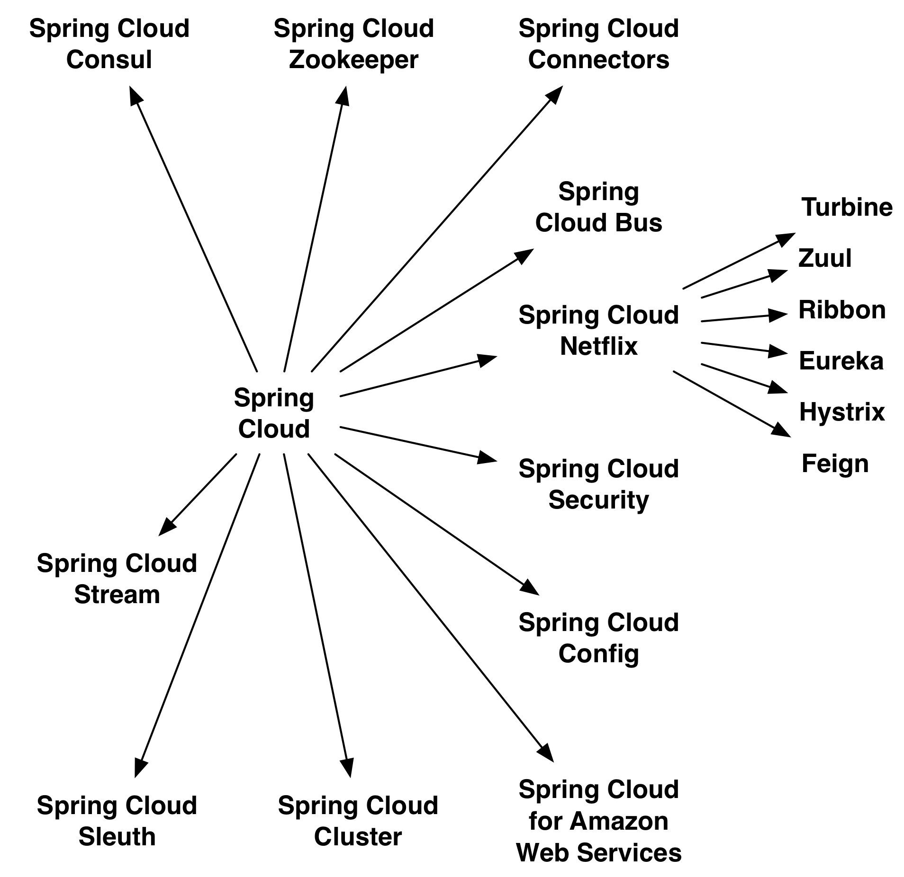

Example for a Microservices-based Architecture
Capgemini APPS Evolve! Summit 2016
Bad Soden, 3rd of March 2016
Krzysztof Sobkowiak (@ksobkowiak)
The Apache Software Foundation Member
Senior Solution Architect at Capgemini
Example for a Microservices-based Architecture
Capgemini APPS Evolve! Summit 2016
Bad Soden, 3rd of March 2016
Krzysztof Sobkowiak (@ksobkowiak)
The Apache Software Foundation Member
Senior Solution Architect at Capgemini
|
|

Separate data storages
Lots of communication
Bounded Context
Don’t modularize microservices by data
In memory database
Not really suited for production use
Keeps the example application easy
Provides support to build repositories based on Spring and JPA
Support for Querydsl predicates and thus type-safe JPA queries
Pagination support, dynamic query execution, ability to integrate custom data access code
public interface PersonRepository extends PagingAndSortingRepository<Person, Long> {
List<Person> findByLastName(@Param("name") String name);
}Provides the domain objects with little effort via REST
Can hide certain data elements
Can be configured flexibly
Tight coupling between the internal model and the interface can be decoupled
@RepositoryRestResource(collectionResourceRel = "people", path = "people")
public interface PersonRepository extends PagingAndSortingRepository<Person, Long> {
List<Person> findByLastName(@Param("name") String name);
}
| |
Writing a single service is nice…
…but no microservice is an island
Configuration management
Service registration & discovery
Routing & balancing
Fault tolerance (Circuit Breakers!)
Monitoring

Security - supports the implementation of security mechanisms
Config - centralizes and dynamically adjusts the configuration
Bus - sends dynamic configuration changes for Spring Cloud Config
Sleuth - distributed tracing with tools like Zipkin or Htrace
Zookeeper - supports Apache Zookeeper
Consult - facilitates Services Discovery using Consul
Cluster - implements leader election and stateful patterns using technologies like Zookeeper or Consul
Stream - supports messaging using Redis, Rabbit or Kafka
Zuul - routing
Ribbon - Load Balancer.
Hystrix - resilience in Microservices.
Turbine - can consolidate monitoring data from different Hystrix servers.
Feign - option for an easier implementation of REST clients
Eureka - Service Discovery
REST based service registry
Supports replication
Caches on the client
Resilient
Fast, but not consistent
Foundation for other services
Registers automatically with the Eureka server under a defined name
Can access other Microservices
Integrates Load Balancing with Ribbon using
DiscoveryClient, FeignClient
Eureka aware RestTemplate (sample later)
@EnableDiscoveryClient or @EnableEurekaClient
Dependency to spring-cloud-starter-eureka
eureka.client.serviceUrl.defaultZone=http://eureka:8761/eureka/
eureka.instance.leaseRenewalIntervalInSeconds=5
spring.application.name=catalog
eureka.instance.metadataMap.instanceId=catalog:${random.value}
eureka.instance.preferIpAddress=true@EnableEurekaServer
Dependency to cloud-starter-eureka-server
@EnableEurekaServer
@EnableAutoConfiguration
public class EurekaApplication {
public static void main(String[] args) {
SpringApplication.run(EurekaApplication.class, args);
}
}
Decentralized, client side Load Balancing
No bottle neck
Resilient
Registration information might be inconsistent
RestTemplate & Load Balancing@RibbonClient
Dependency to spring-cloud-starter-ribbon
@RibbonClient(name = "ribbonApp")
... // Left out other Spring Cloud / Boot Annotations
public class RibbonApp {
@Autowired
private RestTemplate restTemplate;
public void callMicroservice() {
Store store = restTemplate.getForObject("http://stores/store/1", Store.class);
}
}
|
|
@EnableZuulProxy, dependency to spring-cloud-starter-zuul
Alternatively @EnableZuulServer - no routing, uses filters

Microservices can deal with the failure of other Microservices
Even if a called Microservice is not available, they will still work
Enables resilient applications
Call in other thread
Won’t block request handler
Can implement timeout
Circuit open after certain number (error threshold) of failed calls
If open, calls not directed to called system
After configured window circuit closes
Java proxies automaticaly created
Annotations of javanica library
@EnableCircuitBreaker or @EnableHystrix, dependency to spring-cloud-starter-hystrix
@HystrixCommand(fallbackMethod = "getItemsCache", commandProperties = {
@HystrixProperty(name = "circuitBreaker.requestVolumeThreshold", value = "2")
})
public Collection<Item> findAll() {
this.itemsCache = ...
...
return pagedResources.getContent();
}
private Collection<Item> getItemsCache() {
return itemsCache;
}Aggregates data from different Hystrix systems
The state of all Circuit Breakers can be summarized on a single dashboard
@EnableTurbine and @EnableEurekaClient, dependency to spring-cloud-starter-turbine
Can use @EnableHystrixDashboard to display dahsboard on the same instance
Consolidated data determined by the configuration
turbine:
aggregator:
clusterConfig: ORDER
appConfig: orderEasy to create new project
REST integrated
messaging supported
Simple deployment
Uniform operations


Any questions?
Microservices demo - https://github.com/ewolff/microservice
Travel demo - https://github.com/microservices-summit-2016/resilience-demo